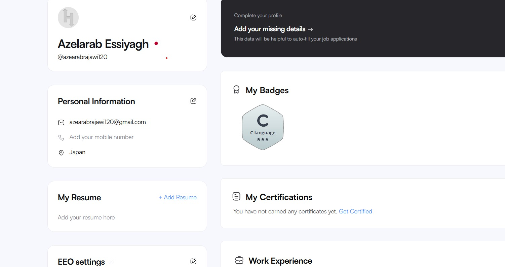

HackerRank Work

During my C programming course, I used HackerRank as one of the main platforms to improve my programming skills. It gave me the opportunity to practice what I learned in class and helped me become more confident when solving programming problems. At first, I found some exercises difficult because I was still learning the basics of C programming. However, after practicing regularly and completing more challenges, I noticed that my understanding of programming concepts became much stronger. Every completed exercise increased my confidence and encouraged me to continue learning.
The platform offered many different exercises that covered important programming topics such as variables, data types, operators, conditional statements, loops, arrays, strings, functions, and basic algorithms. Each challenge required careful thinking before writing the solution. Sometimes my first answer was not accepted because I made a small mistake or forgot an important detail. Instead of becoming frustrated, I carefully checked my code, corrected the errors, and submitted it again. This experience taught me that debugging is an essential part of programming and that making mistakes are a normal part of learning.
One feature that I really liked about HackerRank was the instant feedback after submitting my code. If my solution was correct, I could immediately move on to the next exercise. If it was incorrect, the platform encouraged me to review my code and improve it. This process helped me develop patience and taught me how to analyze problems more carefully. Over time, I became better at finding mistakes on my own before submitting my work. I also learned that there can be more than one correct solution to a programming problem, and comparing different approaches helped me improve my coding style.
HackerRank also motivated me by awarding badges and certificates after completing different challenges and assessments. Receiving these achievements made me feel proud of the effort I had invested in improving my programming skills. They also showed me that continuous practice leads to real progress. These certificates are an important part of my learning journey because they demonstrate my commitment to developing my technical knowledge outside the classroom. Every badge I earned reminded me that small improvements every day can lead to significant progress over time.
Another valuable lesson I learned from HackerRank was how to write cleaner and more organized code. I realized that writing readable code is just as important as writing code that works correctly. As I completed more exercises, I started using better variable names, organizing my code more clearly, and paying attention to details. These habits also helped me complete my university assignments more efficiently and with fewer mistakes. I also became more comfortable reading other people's code and understanding different programming styles.
Using HackerRank outside my regular classes allowed me to practice independently and strengthen my understanding of C programming. It also improved my logical thinking and problem-solving abilities because every challenge required a different approach. I learned that programming is not only about memorizing syntax but also about understanding how to solve problems step by step. Regular practice made me faster, more accurate, and more confident when writing programs for assignments and exams.
Overall, HackerRank became an important part of my learning experience. It helped me improve my programming knowledge, develop stronger analytical skills, and gain confidence in solving coding challenges. The experience also taught me the importance of consistent practice, patience, and continuous learning. I believe the knowledge and skills I gained from HackerRank will continue to help me in future programming courses and in my future career as a software developer. I am proud of the certificate and badges that I earned because they represent my hard work, dedication, and continuous effort to become a better programmer.